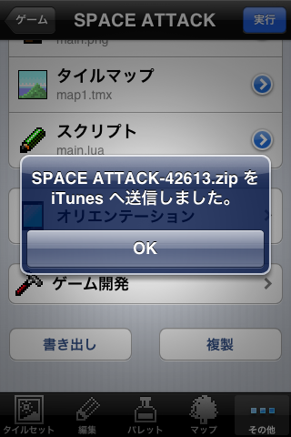

DotEDITORで作ったゲームはスクリプトを書き出すことでMac/Windows上で遊ぶことができます。
※DotEDITORからはダウンロードできません。パソコンのブラウザからダウンロードしてください。
DotEDITORで書き出したいゲームを選択します。
プロジェクト設定画面の下の方にある「書き出し」ボタンをタップします。

プロジェクトファイルはZIPファイルに圧縮された形でiTunesへ送信されます。

iTunesを立ち上げて、DotEDITORから書き出したZIPファイルを取り出して解凍します。

ZIPファイルの中身は次のような構成になっています。

この中の main.lua をピコピコゲームエンジンのウインドウへドラッグ&ドロップすることで遊ぶ事ができます。